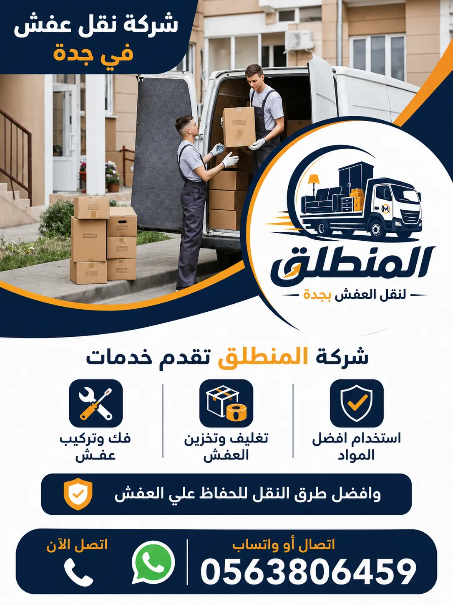

شركة نقل عفش بجدة معتمدة وأعلى مستويات الاحترافية والسلامة

تُعتبر شركة نقل عفش بجدة (مؤسسة المنطلق لنقل وتغليف الأثاث) واحدة من المؤسسات المعتمدة والرائدة في مجال الخدمات اللوجستية لنقل الأثاث المنزلي والمكتبي داخل وخارج عروس البحر الأحمر جدة. إن البحث عن شركات نقل عفش بجدة تتميز بالموثوقية العالية والسرعة والتكلفة المناسبة قد يتطلب الكثير من البحث، لكن مع شركة المنطلق نوفر عليك العناء ونقدم لك تجربة نقل مريحة وخالية من التوتر نهائياً. نحن نضمن لك وصول كافة مقتنياتك وأثاثك بحالتها الأصلية دون تعرض أي قطعة لأي خدش أو تلف.
يمتد تاريخ عملنا كـ شركة نقل أثاث بجدة لأكثر من عشر سنوات متواصلة من التميز، شهدت تطوير أسطول سيارات النقل واستقطاب أفضل الكوادر البشرية من العمالة المصرية والمدربة على أعلى المعايير الفنية. تشمل خدماتنا لنقل العفش كافة المراحل التأسيسية والتنفيذية ابتداءً من معاينة حجم الأثاث، ثم فكه بدقة متناهية، وتغليفه باستخدام أجود المواد، وحمله بوسائل رفع حديثة، ونقله عبر شاحنات مغلقة، وانتهاءً بإعادة تركيبه وتنظيمه في الموقع الجديد بالشكل الذي يلبي تطلعات العميل تماماً.
نحن ندرك جيداً في أفضل شركة نقل عفش بجدة القيمة المادية والمعنوية الكبيرة لأثاثك ومقتنياتك الثمينة، بدءاً من غرف النوم والمجالس الفاخرة وصولاً إلى الأجهزة الإلكترونية والأنتيكات الزجاجية الحساسة. لذا فإن آلية العمل داخل شركة المنطلق تعتمد على خطط مدروسة وتقسيم المهام بين طاقم العمل لضمان الدقة والسرعة. إذا كنت تبحث عن خدمة متكاملة بضمان عقدي شامل، فإن اختيارك لـ نقل عفش بجدة مع المنطلق هو القرار الأصوب والأمن لحماية ممتلكاتك.
لماذا تختار شركة المنطلق لنقل العفش بجدة كخيارك الأول؟
تتعدد الخيارات أمام العوائل والمؤسسات عند التفكير في الانتقال، ولكن تتصدر شركة نقل عفش بجدة (المنطلق) قائمة أفضل الشركات بفضل مجموعة من المقومات الاستثنائية التي تميزنا عن غيرنا. أولاً: **الالتزام الصارم بالمواعيد**؛ فنحن نحترم وقت العميل ونصل في الدقيقة المحددة بالضبط دون أي تأخير. ثانياً: **العمالة الاحترافية والمدربة**؛ حيث يخضع طاقم عمالنا لتدريبات مكثفة على فنون التعامل مع الأثاث الثقيل والأجهزة الحساسة واستخدام المعدات الحديثة.
ثالثاً: **أسطول الشاحنات والدينا الحديثة**؛ نوفر شاحنات مغلقة ومجهزة بأحزمة تثبيت وبطانات داخلية تمنع احتكاك القطع أثناء الحركة على الطريق. رابعاً: **توفير ضمان شامل ومكتوب**؛ حيث تتحمل شركة نقل أثاث جدة التكلفة كاملة أو تعويض العميل في حال حدوث أي خدش أو تلف نادراً ما يقع. خامساً: **الأسعار التنافسية والشفافية التامة**؛ فلا توجد لدينا أي مصاريف خفية أو تكاليف إضافية بعد الاتفاق، مما يجعلنا حقاً أرخص شركة نقل عفش بجدة تقدم جودة ممتازة.
بالإضافة إلى ذلك، توفر الشركه حلولاً تقنية وعصرية متطورة كاستخدام رافعات الأثاث الهيدروليكية (الونش) للوصول إلى الأدوار العليا والأبراج السكنية المرتفعة، مما يزيل مخاطر نقل القطع الضخمة عبر السلالم الضيقة. عبر متابعتك لـ مدونة شركة المنطلق يمكنك الاطلاع على أحدث المقالات والإرشادات التي نساعد بها عملاءنا في تجهيز منازلهم للانتقال بسلاسة.
ضمان 100%
حماية كاملة للعفش
دينا حديثة
سيارات مغلقة ومجهزة
عمالة مدربة
فنيين ونجارين خبرة
أسعار مناسبة
عروض وخصومات ممتازة
خدمات نقل الأثاث بجدة | تغطية شاملة لكافة المتطلبات السكنية والتجارية
تتعدد وتتنوع خدماتنا داخل شركة نقل أثاث بجدة لتغطي كافة الاحتياجات الممكنة للعميل. نحن لا نقتصر على مجرد شحن الأثاث من مكان لآخر، بل نقدم منظومة خدمات متكاملة تشمل نقل الشقق السكنية، الفلل الفاخرة، المكاتب الإدارية، المحال التجارية، والمؤسسات الحكومية والخاصة. يتميز عملنا بالمرونة التامة؛ حيث يمكنك طلب خدمة النقل الشاملة (فك + تغليف + تحميل + نقل + تركيب) أو اختيار خدمات فردية حسب حاجتك وميزانيتك.
من بين أبرز خدماتنا المتميزة خدمة نقل العفش مع التغليف بجدة، حيث نستخدم مستلزمات تغليف ذات جودة عالية لحماية السجاد، الأثاث الخشبي، والستائر من أي اتساخ أو أتربة أثناء مراحل التحميل والتنزيل. كما توفر الشركة أيضاً خدمات تخزين الأثاث بجدة في مستودعات وآمنة ومؤمنة بالكامل ضد الحريق والحرارة العالية، مما يضمن لك تخزين عفشك لأي فترة زمنية ترغب بها بأمان تام.
إن خبرتنا العريضة في خدمات نقل العفش بجدة تجعلنا القادرين على التعامل مع أكثر ظروف النقل تعقيداً، مثل وجود أثاث ثقيل جداً كبيانو أو خزائن حديدية (خزن)، أو النقل في أوقات الذروة وازدحام الشوارع بجدة، حيث يمتلك سائقونا معرفة دقيقة بكافة الاختصارات والطرق السريعة لضمان وصول الشحنات في أسرع وقت ممكن.
فك وتركيب الأثاث بجدة | نجارون متخصصون لغرف النوم والمطابخ وأثاث إيكيا
تعتبر مرحلة الفك والتركيب من أهم المراحل المفصلية في عملية نقل الأثاث؛ إذ إن أي خطأ غير مقصود من عمالة غير مؤهلة قد يؤدي إلى تلف المفصلات أو كسر الأخشاب. لذلك، حرصت شركة نقل عفش بجدة على توظيف أفضل طاقم نجارين وفنيين متخصصين يمتلكون خبرة سنوات طويلة في فك وتركيب الأثاث بجدة بمختلف أنواعه وأشكاله المعقدة.
يقوم الفنيون لدينا بفك الدواليب الضخمة، أسرّة غرف النوم الرئيسية بجدة، التسريحات، المكتبات، وطاولات الطعام الكبيرة. ويتم وضع ترقيم وتسلسل دقيق لكافة القطع المفككة مع حفظ المسامير والبراغي والمفصلات في أكياس مخصصة ومبوبة لكل قطعة أثاث، مما يضمن إعادة تجميعها وتركيبها في المكان الجديد بنفس الجودة والمتانة الأصلية تماماً دون أي خلل أو اهتزاز.
كما نتمتع بتخصص عالي في التعامل مع أثاث إيكيا (IKEA) والأثاث المستورد الذي يتطلب كتالوجات وأدوات خاصة للفك والتركيب. بالإضافة إلى ذلك، نوفر فنيي مطابخ متخصصين لـ نقل فك وتركيب المطابخ بجدة وتعديل الرخام الخشبي أو الصناعي وتثبيته بدقة متناهية ليناسب مساحة المطبخ الجديد بشكل أنيق وعملي.
تغليف العفش الاحترافي بجدة | مواد خامة عالية الجودة لحماية مضاعفة
لا يمكن ضمان سلامة الأثاث أثناء عملية النقل والتحميل بدون استخدام نظام تغليف محكم ومجرب. في شركة نقل عفش بجدة المنطلق، نولي عملية تغليف الأثاث بجدة اهتماماً فائقاً، حيث نستورد أجود خامات مواد التغليف المعترف بها عالمياً لضمان أعلى مستويات الأمان الوقائي لجميع قطع الأثاث.
تتنوع خامات التغليف المستخدمة لدينا لتناسب طبيعة كل قطعة: 1. **الرولات الفقاعية (Bubble Wrap)**: تُستخدم لتغليف الأواني الزجاجية، المرايا، والتحف، والشاشات لحمايتها من الكسر أو الصدمات. 2. **الكرتون المقوى المزدوج (Corrugated Boxes)**: يتم وضع الأغراض الشخصية والكتب والملابس والقطع الصغيرة داخل صناديق كرتونية متينة ومبوبة. 3. **الاسترتش البلاستيكي الضاغط (Stretch Film)**: يتم لفه على الكنب والأثاث الخشبي والمجالس لمنع دخول الغبار أو الأتربة وتثبيت القطع المفككة ببعضها. 4. **البطانيات القماشية والشرائط اللاصقة**: لحماية الأطراف والزوايا الحادة للدواليب والطاولات أثناء رفعها وتنزيلها عبر الدرج.
تضمن لك حزمة نقل العفش مع التغليف بجدة العبور بأمان تام لأصعب الظروف الجوية أو الطرق غير المستوية، حيث تبقى كل قطعة داخل غلافها المحكم حتى يتم تفريغها وتركيبها بأمان داخل منزلك الجديد.
نقل الكنب والمجالس وغرف النوم بجدة باحترافية وعناية فائقة
تتطلب غرف النوم والمجالس والكنب معاملة خاصة أثناء عملية النقل؛ نظراً لضخامة حجمها وحساسية أقمشتها وخشبها. توفر شركة نقل عفش بجدة طرقاً وأساليب مبتكرة لـ نقل غرف النوم بجدة تشمل فك المراتب، الدواليب السحابية أو العادية، والسرائر وتغليفها بطبقات من النيلون والكرتون المقوى لحمايتها من الاحتكاك بأدراج البنايات.
كما يهتم طاقمنا بنقل الكنب والمجالس العربية والكلاسيكية والمودرن بشكل دقيق عبر تغليفها بأغطية قماشية وبلاستيكية متينة تمنع اتساخ أقمشتها الشامواه أو الجلدية. ويتم استخدام أحزمة نقل مخصصة تسمح للعمال بحمل الكنب الثقيل وتوازنه بسلاسة دون ملامسة الأرضيات أو الجدران، مما يحافظ على نظافتها وسلامة طلاء منزلكم القديم والجديد.
سواء كانت غرف نومك من الخشب الزان الثقيل أو المطابخ المصنوعة من الألومنيوم أو الأكريليك، فإن خبراءنا في نقل المطابخ بجدة ونقل الأثاث يتولون كافة التفاصيل الدقيقة لتحصل على نتيجة مبهرة وراحة بال كاملة.
نقل الأجهزة الكهربائية والمكيفات بجدة | فنيون متخصصون لأمان تكييفك وأجهزتك
تُعد الأجهزة الكهربائية المنزلية مثل الثلاجات، غسالات الأوتوماتيك، الشاشات الكبيرة، والمكيفات من أكثر الأغراض التي تتطلب عناية فائقة وفكاً هندسياً صحيحاً. توفر شركة نقل عفش بجدة فنيي تكييف وكهرباء متمرسين لتقديم خدمة نقل الأجهزة الكهربائية بجدة بأعلى درجات السلامة.
تشمل خدمات التكييف فك مكيفات السبليلت والشباك واختبار غاز الفريون وتنظيف الفلاتر ثم غسيل وتغليف الوحدة الداخلية والخارجية بـ فوم حماية لمنع الصدمات أثناء الشحن. يمكنك الاعتماد علينا في نقل وتكييف العفش بجدة حيث يعيد الفنيون تركيب المكيفات وتوصيلها واختبار كفاءة التبريد في منزلكم الجديد مباشرة.
أما بالنسبة للثلاجات والغسالات والشاشات الذكية، فيتم تثبيت أبوابها وأنابيبها الداخلية وتغليفها بصناديق ممتصة للصدمات ونقلها في وضع رأسي مطابق للتعليمات المصنعية لمنع تسرب الزيوت أو غاز التبريد، مما يحافظ على عمرها الافتراضي وأدائها التام.
نقل أثاث المكاتب والشركات بجدة | حلول سريعة ومنظمة لتجنب توقف الأعمال
تتطلب عمليات نقل الشركات والمؤسسات والمكاتب التجارية مستوى استثنائياً من التنظيم والسرعة؛ حتى لا تتعطل مصالح الشركة أو تتوقف خدمة العملاء. تقدم شركة نقل عفش بجدة المنطلق حلولاً متطورة لـ نقل أثاث المكاتب والشركات بجدة تتضمن جدولة عملية النقل في عطلات نهاية الأسبوع أو الفترات المسائية.
نقوم بتفكيك المكاتب الخشبية والكونترات، قاعات الاجتماعات، الأرفف المعدنية، وتغليف أجهزة الكمبيوتر والتلفزيونات والسيرفرات الحساسة بمواد خافضة للكهرباء الساكنة وممتصة للصدمات. كما يوفر فريقنا صناديق مخصصة ومقفلة بأرقام تسلسلية لنقل المستندات، الملفات، والأوراق الرسمية لضمان الخصوصية والسرية التامة للشركة.
يتم ترقيم كافة الأجهزة والمكاتب حسب الأقسام (الموارد البشرية، المحاسبة، الإدارة العليا)، مما يسهل عملية تفريغها وإعادة تركيبها وتوزيعها في مقرك الجديد بطريقة منظمة تمكن موظفيك من استئناف عملهم مباشرة من اليوم التالي بدون أي ارتباك. تواصل معنا اليوم للحصول على عرض سعر رسمي مخصص لمؤسستك.
نقل أثاث الفلل والشقق السكنية بجدة | خطط نقل مخصصة للمنازل الكبيرة
يمثل نقل الفلل والقصور السكنية تحدياً كبيراً نظراً لكثرة عدد الغرف والقطع الثمينة والتحف وأثاث الحدائق والملاحق الخارجية. تقدم شركة نقل عفش بجدة خططاً متكاملة لـ نقل أثاث الفلل بجدة تعتمد على إرسال فريق عمل موسع يتكون من عدة مجموعات تعمل بالتوازي لإنجاز نقل الفيلا بالكامل في يوم واحد فقط.
تتضمن خدماتنا لنقل الفلل الشاملة نقل النجف البلوري الكريستالي، السجاد الإيراني، التحف الفخارية، الثريات، والأجهزة الرياضية الضخمة، حيث نقوم بعمل صناديق خشبية مفصلة خصيصاً لحماية هذه المقتنيات النادرة أثناء التحميل والتنقل. كما نستخدم الرافعات الهيدروليكية ونش نقل العفش لرفع القطع من وإلى الشرفات والنوافذ الكبيرة.
أما بالنسبة لـ الشقق السكنية بمختلف مساحاتها، فإننا نوفر دينا نقل عفش مرنة وسريعة تتناسب مع حركة المرور والشوارع الضيقة في بعض أحياء جدة، مع الحفاظ على نفس جودة التغليف والتثبيت والضمان.
نقل العفش بين مدن المملكة من وإلى جدة | شحن آمن ورحلات طويلة مجهزة
لا تتوقف خدماتنا عند حدود مدينة جدة فحسب، بل تمتد لتغطي شحن ونقل العفش إلى كافة مدن ومناطق المملكة العربية السعودية. توفر شركة نقل عفش بجدة شاحنات نقل تريلات وشاسيهات كبيرة مخصصة للرحلات المسافية الطويلة ومزودة بنظام تعليق هيدروليكي يمنع اهتزاز الشحنة في الطرق السريعة.
تشمل خطوط النقل الرئيسية لدينا: - نقل عفش من جدة إلى الرياض (خدمة شحن يومية مريحة). - نقل عفش من جدة إلى مكة المكرمة. - نقل عفش من جدة إلى المدينة المنورة. - نقل عفش من جدة إلى الدمام والمنطقة الشرقية. - نقل عفش من جدة إلى الطائف والأبحاث.
في الرحلات بين المدن، نقوم بمضاعفة طبقات التغليف والتثبيت الداخلي بالشاحنات مع تزويد السيارات بأجهزة تتبع GPS مباشرة تمكن العميل من معرفة خط سير عفشه حتى وصوله بسلام إلى المنزل الجديد وإعادة تركيبه بالكامل.
سيارات ودينا نقل عفش بجدة | أسطول حديث ومغلق لحماية الأثاث
يمثل أسطول السيارات العمود الفقري لأي شركة نقل عفش بجدة ناجحة. نحن في شركة المنطلق نمتلك أحدث أسطول من **دينا نقل عفش جدة** وشاحنات النقل المغلقة المجهزة خصيصاً بنظافة تامة وأرضيات خشبية ومجاري تثبيت قماشية تمنع انزلاق القطع أو سقوطها أثناء السير.
تتنوع مقاسات سياراتنا لتلبي مختلف حجم الشحنات: 1. **دينا نقل عفش متوسطة (4 إلى 5 أمتار)**: مثالية لنقل محتويات الشقق الصغيرة أو نقل غرف النوم والكنب المنفصل. 2. **شاحنات كبيرة (6 أمتار وأكثر)**: مخصصة لنقل الفلل، القصور، وأثاث المكاتب الكبيرة في رحلة واحدة. 3. **سيارات نقل مفتوحة ومزودة بروافع**: لنقل المواد والمعدات الكبيرة والصلبة.
جميع سياراتنا تخضع لصيانة دورية وفحوصات السلامة، ويقودها سائقون محترفون حاصلون على رخص قيادة ثقيلة ولديهم دراية تامة بجميع أحياء وطرق مدينة جدة لتفادي الازدحام المروري وضمان سرعة التوصيل.
مقارنة بين شركة المنطلق لنقل العفش بجدة والطرق التقليدية والعمالة العشوائية
يوضح الجدول التالي الفروقات الجوهرية بين اختيارك لـ شركة نقل عفش بجدة معتمدة كـ شركة المنطلق وبين الاستعانة بالطرق التقليدية أو العمالة العشوائية غير المعتمدة:
| وجه المقارنة | شركة المنطلق لنقل العفش بجدة | الطرق التقليدية والعمالة العشوائية |
|---|---|---|
| عقد الضمان والمسؤولية | عقد ضمان رسمي يغطي أي تلف أو كسر 100% | لا يوجد أي ضمان، وتنصل كامل عند حدوث تلفيات |
| خبرة طاقم العمل | نجارون وفنيون متخصصون ومدربون على أعلى مستوى | عمالة مجهولة تفتقر لمهارات الفك والتركيب والتغليف |
| مواد التغليف المستعملة | نايلون فقاعي، كرتون مضاعف، فوم، استرتش عالي الجودة | تغليف عشوائي بأقمشة قديمة أو بدون تغليف إطلاقاً |
| تجهيز سيارات النقل | دينا وشاحنات مغلقة ومبطنة ومجهزة بأحزمة تثبيت | سيارات مكشوفة تكسر العفش وتعرضه للغبار والأمطار |
| الالتزام بالمواعيد | وصول في الوقت المحدد بدقة وإنجاز سريع | مواعيد غير منتظمة وتأخير مستمر بالساعات |
| شفافية الأسعار | أسعار محددة مسبقاً وتنافسية بدون أي تكاليف خفية | مساومات مستمرة وطلب مبالغ إضافية أثناء التحميل |
الأحياء والمدن التي تخدمها شركة المنطلق لنقل العفش بجدة
تمتلك شركة نقل عفش بجدة تغطية شاملة وميدانية سريعة بكافة منافذ وأحياء مدينة جدة بمناطقها الشمالية، الجنوبية، الشرقية، والغربية. نصل إليك خلال 30 دقيقة فقط من طلبك. يمكنك الضغط على أي حي أدناه لزيارة صفحة التغطية المخصصة:
📍 خدمات نقل العفش بأحياء جدة الرئيسية:
🚚 خدمات شحن ونقل العفش من جدة إلى المدن الأخرى:
أسعار نقل العفش بجدة | عروض وخصومات ممتازة لعام 2026
حرصاً من شركة نقل عفش بجدة على تقديم أعلى مستويات الشفافية، نضع بين يديك قائمة استرشادية بـ **أسعار نقل العفش بجدة** المتاحة لدينا مع التخفيضات الكبيرة المقدمة هذا الشهر:
| نوع الخدمة / حجم المنشأة | السعر التقديري (ريال سعودي) | تفاصيل ومشتملات الخدمة |
|---|---|---|
| نقل شقة غرفة نوم واحدة (استوديو) | 300 - 450 ريال | شامل دينا نقل صغيرة + الفك والتركيب والتغليف |
| نقل شقة سكنية غرفتين وصالة | 500 - 700 ريال | شامل عمالة مدربة + فك وتركيب وتغليف احترافي |
| نقل شقة 3 إلى 4 غرف وصالة | 750 - 1100 ريال | دينا كبرى + فنيين تكييف ونجارين + ضمان كامل |
| نقل فيلا سكنية صغيرة (دوبلكس) | 1400 - 2000 ريال | شاحنتين كبار + طاقم 6 عمال + فك وتركيب كامل |
| نقل فيلا كبيرة أو قصر | 2200 - 3500 ريال | طاقم عمل متكامل + أسطول سيارات + ونش رفع هيدروليكي |
| نقل أثاث مكتب أو شركة تجارية | 900 - 2500 ريال | حسب عدد الأجهزة والمكاتب والصناديق المقفلة |
| خدمة تغليف العفش فقط (بدون نقل) | 200 - 500 ريال | توفير كراتين وبلاستيك فقاعي وعمالة التغليف |
| خدمة الفك والتركيب فقط (نجارة) | 200 - 600 ريال | فك وتركيب الغرف والمطابخ بأيدي نجارين خبرة |
🎁 عرض خاص بمناسبة العام الجديد!
احصل على خصم فوري بقيمة **20% إلى 25%** عند حجز موعد نقل عفشك مبكراً أو عند اختيار حزمة النقل الشاملة بجدة. اتصل بنا فوراً للحصول على التخفيض!
آراء وتقييمات عملاء شركة المنطلق لنقل العفش بجدة
نفخر في أفضل شركة نقل عفش بجدة بثقة آلاف العملاء الكرام الذين تعاملوا معنا وسعدنا بخدمتهم في مختلف أحياء جدة. إليك بعض تقييماتهم الواقعية:
"تجربة ممتازة جداً مع شركة المنطلق. تم نقل عفش شقتي بالكامل من حي الروضة إلى حي الشاطئ بدون أي خدش واحد! النجارين فكوا غرفة النوم الكبيرة وركبوها بمثالية تامة. أنصح بالتعامل معهم بشدة."
"شركة محترفة جداً وتلتزم بالوقت بالدقيقة. طلبنا دينا نقل عفش لنقل مكتب شركتنا، وكان التعامل من العمالة والمهندسين في غاية الأدب والسرعة والتغليف كان ممتاز للغاية. أسعارهم منافسة جداً."
"أحسن شركة نقل أثاث بجدة جربتها. نقلت عفش فيلتي كاملة وشملت التغليف والفك ونقل المكيفات. كل شيء تم بسلاسة وبصراحة سعرهم كان أفضل سعر حصلت عليه مقارنة بباقي الشركات."
"تم نقل أثاث منزلي من جدة إلى الرياض عبر شاحنات المنطلق المغلقة. وصل العفش كاملاً وفي الموعد المحدد بالضبط وبدون أي تلف. أشكر طاقم العمل على أمانتهم واحترافيتهم."
الأسئلة الشائعة حول شركة نقل عفش بجدة (إجابات تفصيلية)
إليك إجابات شاملة لأبرز 15 سؤالاً يتكرر طرحها من قبل عملائنا الكرام بخصوص خدمات شركة نقل عفش بجدة:
1. ما هي أفضل شركة نقل عفش بجدة؟
تُعد شركة المنطلق لنقل العفش أفضل شركة نقل عفش بجدة بفضل خبرتها الطويلة، واستخدامها أحدث دينا وسيارت النقل المغلقة، وتوفير طاقم نجارين وعمالة مدربة مع عقد ضمان كتابي شامل لسلامة كافة المحتويات.
2. كم تبلغ أسعار نقل العفش في جدة؟
تبدأ أسعار نقل العفش بجدة من 300 ريال سعودي للشقق الصغيرة وتتحدد التكلفة بدقة حسب حجم الأثاث والمسافة وخدمات الفك والتركيب والتغليف المطلوبة مع تقديم عروض خصم فورية تصل إلى 25%.
3. هل توفر الشركه خدمة فك وتركيب الأثاث وإعادة تركيبه؟
نعم، نوفر فنيين ونجارين محترفين لـ فك وتركيب العفش بجدة لغرف النوم والمطابخ وأثاث إيكيا والمكاتب وإعادة تركيبه في المكان الجديد بدقة متناهية.
4. كيف يتم تغليف العفش لحمايته أثناء النقل بجدة؟
نستخدم أفضل مواد التغليف العالمية في خدمة تغليف الأثاث بجدة، وتتمثل في النيلون الفقاعي للتحف والأجهزة، الكرتون المقوى للمقتنيات، والاسترتش الضاغط للكنب والمجالس.
5. ما هي أنواع السيارات المستخدمة في نقل العفش بجدة؟
نمتلك أسطولاً حديثاً يشمل دينا نقل عفش جدة مغلقة ومخصصة للشقق، وشاحنات كبرى للفلل والشركات، جميعها مجهزة بمصدمات وبطانات جانبية وأحزمة تثبيت للحفاظ على سلامة العفش.
6. هل تقدمون خدمات نقل المكاتب والشركات في جدة؟
بالتأكيد، نوفر خططاً سريعة ومنظمة لـ نقل المكاتب والشركات بجدة تشمل نقل الأجهزة الإلكترونية والأرشيف بدقة وتتم خارج ساعات الدوام لمنع تعطيل العمل.
7. كم تستغرق عملية نقل العفش داخل مدينة جدة؟
تستغرق العملية للشقق السكنية من 3 إلى 5 ساعات، وللفلل الكبيرة من 6 إلى 8 ساعات شاملاً خطة الفك والتحميل والتغليف والتركيب الكامل.
8. هل توفرون خدمة نقل العفش بين جدة وباقي مدن المملكة؟
نعم، نوفر رحلات شحن يومية لنقل الأثاث من جدة إلى الرياض، مكة المكرمة، المدينة المنورة، الدمام، والطائف بشاحنات مجهزة للسفر المسافي الطويل.
9. هل توفر شركة نقل عفش بجدة ضماناً كتابياً على الخدمات؟
نعم، تلتزم شركة المنطلق بعقد ضمان رسمي ومكتوب يتعهد بالمسؤولية الكاملة عن كافة محتويات العفش وتوفير تعويض فوري عند وقوع أي حادث أو تلف.
10. كيف يتم حساب التكلفة الإجمالية لنقل الأثاث؟
يتم حساب التكلفة بناءً على كمية العفش المراد نقله، عدد الأدوار وجودة المصاعد، المسافة بين المنزلين، وخدمات التغليف والفك والتركيب المطلوبة.
11. هل تقدمون خدمة نقل الأجهزة الكهربائية والمكيفات؟
نعم، لدينا فنيين متخصصين لـ نقل الأجهزة الكهربائية بجدة والمكيفات وفكها وتغليفها ونقلها وإعادة تركيبها بأمان.
12. هل تتعاملون مع الأثاث الفاخر والتحف الثمينة؟
نعم، يمتلك طاقمنا خبرة واسعة في التعامل مع التحف والنجف والزجاج عبر تصنيع صناديق خشبية واستخدام الفوم الفقاعي لمنع تعرضها لأي ضرر.
13. هل تعمل شركة نقل عفش بجدة خلال عطلة نهاية الأسبوع؟
نعم، نحن نعمل على مدار 24 ساعة طوال أيام الأسبوع بما في ذلك الجمعة والسبت والعطلات الرسمية لتلبية جميع طلبات النقل في الوقت الذي يناسبك.
14. ما الأوراق أو الإجراءات المطلوبة قبل حجز موعد نقل العفش؟
لا توجد إجراءات معقدة؛ فقط تواصل معنا عبر الهاتف أو الواتساب لتحديد الموقع والموعد، وسيرسل لك مندوبنا طاقم المعاينة والعمل فوراً.
15. كيف يمكنني الحصول على خصم عند نقل العفش بجدة؟
يمكنك الحصول على خصم يصل إلى 25% من خلال الحجز المبكر أو عند طلب حزمة الخدمات المتكاملة (فك + تغليف + تحميل + نقل + تركيب).
شركة نقل عفش بجدة - احجز نَقْلك الآن بضمان وأرخص سعر!
انتقل إلى منزلك الجديد براحة بال تامة بدون أي عناء. فريق المنطلق جاهز لخدمتك في جميع أحياء جدة على مدار 24 ساعة.